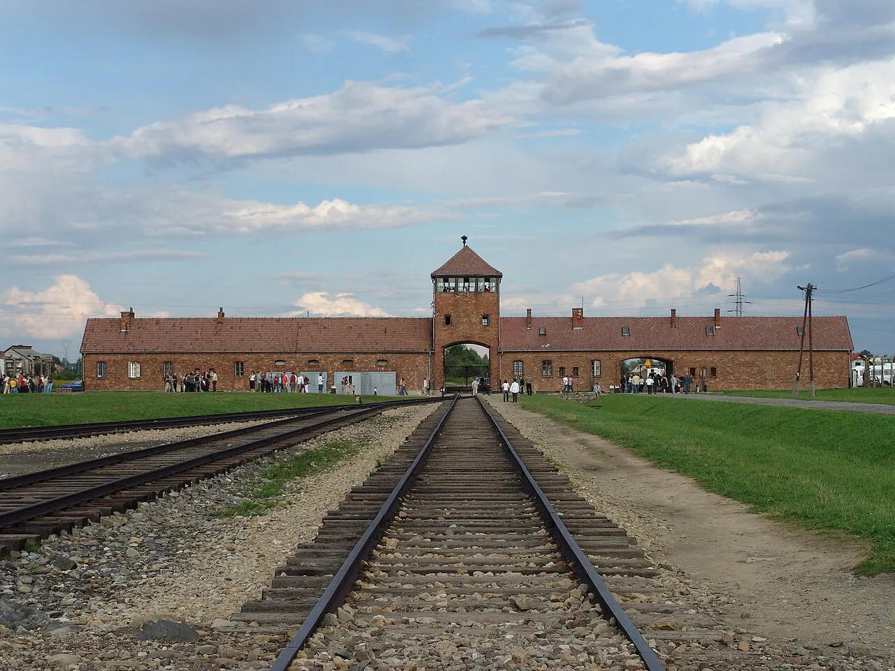
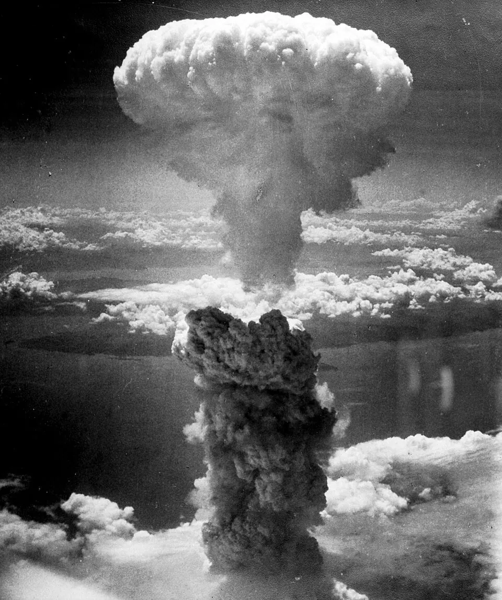
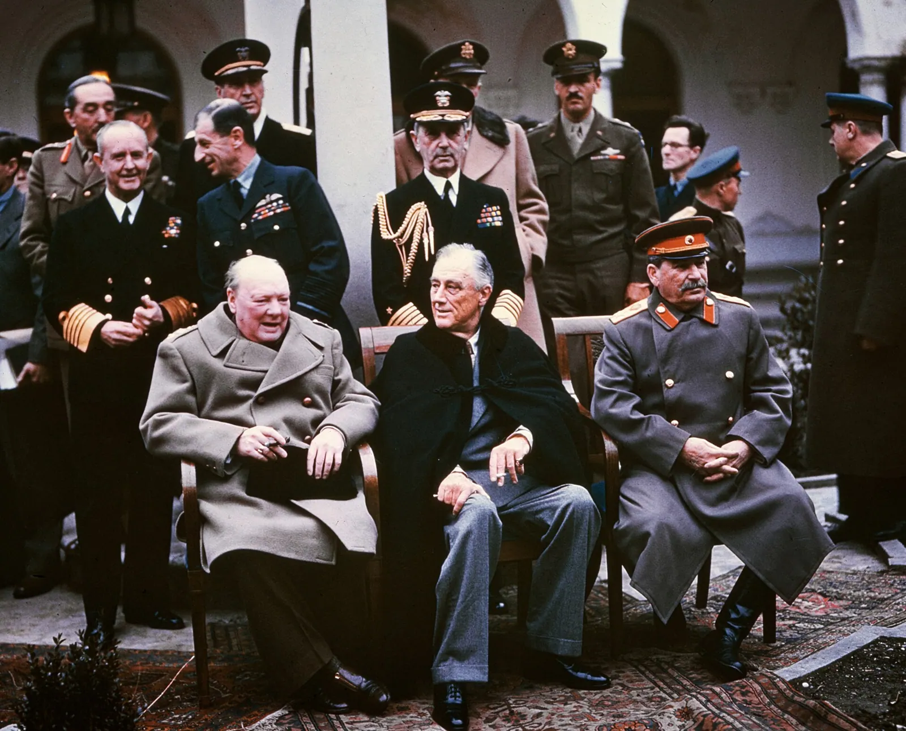
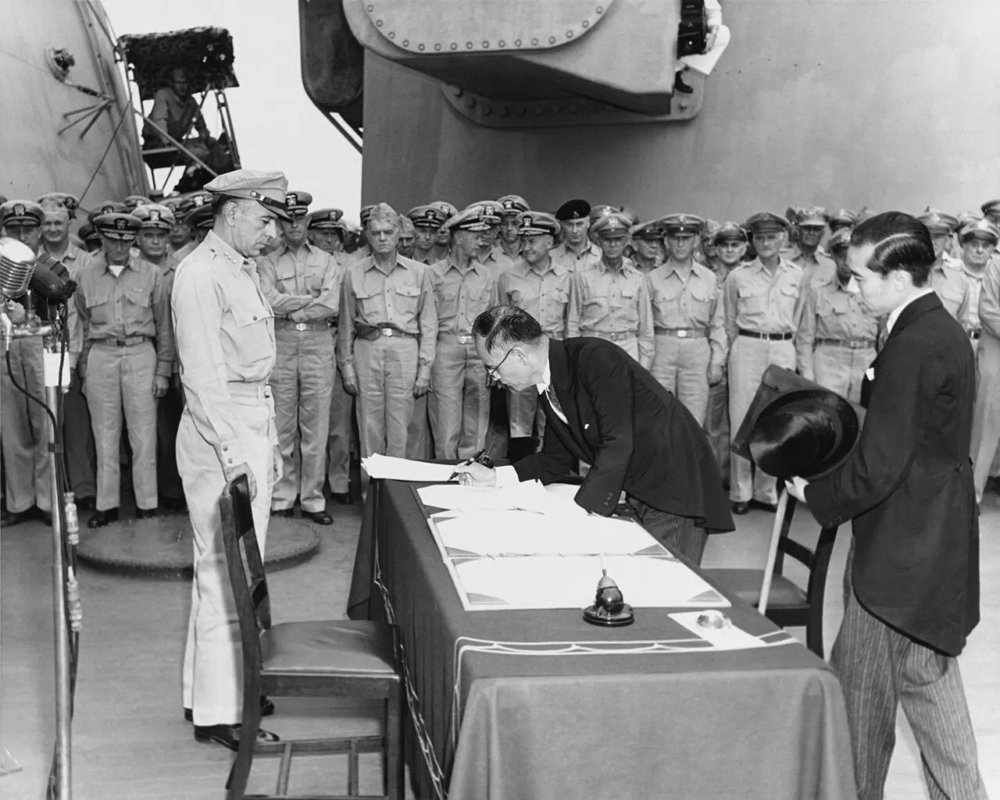

La Seconde Guerre mondiale est le conflit le plus meurtrier de toute l'histoire. Contrairement aux conflits antérieurs, elle ne frappe pas uniquement les armées en campagne : elle s'abat sur les populations dans leur ensemble, abolissant toute distinction entre front et arrière.
Ce bilan humain vertigineux s'explique notamment par la violence totale de la guerre. Des pays ont été particulièrement touchés :
La Seconde Guerre mondiale marque ainsi une rupture historique : la population n'est plus seulement victime collatérale, mais devient une cible directe de la violence.
Les civils subissent les conséquences des nouvelles stratégies de guerre, fondées sur la puissance de feu et l'anéantissement. Les villes se transforment en véritables champs de bataille et deviennent des cibles de bombardements massifs.

La guerre est marquée par une politique d'extermination volontaire menée par le régime nazi : c'est le double génocide des Juifs et des Tsiganes. Les victimes le sont de plusieurs manières :
- Les ghettos : plus de 800 000 morts juifs par famine et par maladie.
- Les Einsatzgruppen : environ 1,3 million de morts lors des exécutions massives à l'Est.
- Les camps : environ 3 millions de morts par une mise à mort industrielle.
- Les Tsiganes : environ 240 000 morts, victimes du même processus d'extermination.
Le mot « génocide » est créé en 1944 par le juriste polonais Raphaël Lemkin. Il désigne la destruction de tout ou d'une partie d'un peuple de manière intentionnelle, volontaire et planifiée. Son objectif était de nommer et faire reconnaître juridiquement les massacres de masse commis par l'Allemagne nazie, mais aussi de faire écho au massacre des Arméniens perpétré par l'Empire ottoman durant la Première Guerre mondiale.
On observe aussi des crimes de guerre commis contre les civils par les armées régulières. En 1937, l'armée japonaise massacre plus de 150 000 civils à Nankin, en Chine, lors d'une campagne d'occupation particulièrement violente. Ainsi, la Seconde Guerre mondiale est une guerre d'anéantissement, dans laquelle les civils deviennent des cibles stratégiques.
Selon Sloterdijk, la Seconde Guerre mondiale marque un tournant décisif dans l'histoire de la guerre. Elle voit naître une nouvelle forme de violence qu'il nomme « atmoterrorisme », c'est-à-dire un terrorisme par l'atmosphère.
À partir des bombardements massifs de Dresde ou Tokyo, puis avec Hiroshima et Nagasaki, la stratégie ne vise plus les forces armées, mais l'espace vital dans lequel vivent les populations civiles. En rendant l'atmosphère inhabitable par le feu, le gaz ou la radioactivité, on cherche à briser une population entière sans même la rencontrer.
Pour Sloterdijk, la guerre moderne est devenue environnementale : elle ne tue plus par contact, mais par milieu — elle vise désormais l'habitat naturel de l'homme.
En plus du bilan humain extrêmement lourd, la Seconde Guerre mondiale laisse derrière elle des destructions matérielles considérables, estimées à 2 000 milliards de dollars, soit cinq fois le PIB mondial de l'époque. De nombreuses villes sont réduites en ruines à cause des bombardements intensifs.
En Europe, près de 60 % des bâtiments industriels sont détruits ou gravement endommagés, ce qui paralyse durablement la production. Les voies ferrées, essentielles au transport, sont elles aussi sévèrement atteintes :
Ces destructions plongent l'Europe dans une crise économique et sociale profonde. Toute l'économie est désorganisée : il faut tout reconstruire — les usines, les chemins de fer, les villes et les habitations.
Après 1945, les destructions et le chaos économique entraînent de fortes pénuries alimentaires dans de nombreux pays européens : l'agriculture, les transports et les zones de stockage ayant été détruits, les difficultés d'approvisionnement se prolongent plusieurs années.
Au-delà des destructions matérielles et humaines, la Seconde Guerre mondiale laisse un traumatisme moral sans précédent. Deux révélations, en 1945, ébranlent profondément les consciences : l'horreur des camps d'extermination et la puissance destructrice de l'arme atomique.
Ce sont d'abord les Soviétiques qui découvrent les premiers camps d'extermination nazis, mais ces révélations sont peu médiatisées. Ce n'est qu'après la libération des camps par les Américains que les atrocités sont largement diffusées au monde entier.
Les États-Unis décident de médiatiser ces découvertes, montrant les images de cadavres, de survivants squelettiques et des installations d'extermination. Les populations allemandes locales sont même forcées à visiter les camps pour qu'elles ne puissent pas nier la réalité du génocide.
Cette révélation fait prendre conscience de la barbarie humaine et choque profondément l'opinion mondiale. Beaucoup de sociétés occidentales entrent alors dans un temps de culpabilité et d'interrogation morale.

Parallèlement, l'année 1945 est aussi marquée par les bombardements atomiques dans les villes japonaises d'Hiroshima et Nagasaki. Pour certains, notamment dans le contexte militaire américain, l'arme atomique apparaît comme un triomphe scientifique et un moyen d'abréger la guerre, en évitant un débarquement terrestre qui aurait coûté la vie à des centaines de milliers de soldats.
Mais pour d'autres, comme Albert Camus, il ne s'agit pas d'un progrès, mais du « dernier degré de la sauvagerie humaine ». Dans son éditorial du 8 août 1945, l'écrivain dénonce une civilisation qui se félicite d'une découverte capable de rayer une ville entière en un instant.
L'entrée dans l'ère atomique fait ainsi douter de l'idée même de civilisation et de progrès : désormais, l'humanité possède le pouvoir de s'autodétruire tout entière, par sa propre main.
Le traumatisme moral laissé par la guerre fait écho aux analyses de Freud, qui évoquait déjà avant 1939 l'existence d'une « pulsion de mort » présente en chaque être humain. Selon lui, l'homme ne cherche pas seulement à vivre et à créer, mais porte aussi en lui une tendance profonde à détruire, à revenir à l'état inorganique.
La Seconde Guerre mondiale semble confirmer tragiquement cette intuition : les génocides, les massacres de civils et les bombardements atomiques révèlent une capacité humaine à produire la mort à une échelle industrielle.
Le monde qui naît à la suite de la Seconde Guerre mondiale est profondément différent de celui d'avant-guerre.Maurice Vaïsse, historien
Si la guerre laisse un monde en ruines, elle est aussi l'occasion d'une coopération sans précédent entre des nations profondément différentes idéologiquement. Les grandes puissances alliées — les États-Unis, le Royaume-Uni et l'Union soviétique — se réunissent lors de plusieurs conférences pour coordonner leurs efforts militaires et préparer l'après-guerre. C'est le temps de la Grande Alliance.

Réunit Roosevelt, Churchill et Tchang Kaï-chek. Staline refuse d'y participer, l'URSS ne souhaitant pas s'impliquer dans un nouvel ordre asiatique. Les discussions portent sur le Japon, qui devra revenir à ses frontières de 1914 après sa défaite.
Première véritable rencontre des « Trois Grands » : Staline, Roosevelt et Churchill. Décision du débarquement en France (opération Overlord) combiné à l'opération Bagration à l'Est. Les dirigeants abordent aussi la question du futur de la Pologne, dont les frontières seraient déplacées vers l'Ouest.
Staline est en position de force ; la France n'est pas invitée. Décision de découper l'Allemagne en quatre zones d'occupation. Staline s'engage à restaurer la démocratie dans les territoires libérés. Il obtient une influence sur l'Europe de l'Est, posant les bases de la future division du continent.
Réunit Staline, Harry Truman (successeur de Roosevelt) et Clement Attlee (remplaçant Churchill). Confirmation du jugement des criminels de guerre nazis selon la politique des 3D : dénazification, démilitarisation, décartellisation. Truman annonce la bombe atomique ; la méfiance s'installe entre les deux puissances.
Au sortir de la guerre, le monde n'est plus multipolaire : deux puissances s'imposent avec une supériorité écrasante sur toutes les autres, tant sur le plan militaire qu'économique et idéologique. Cette bipolarisation marque une rupture décisive avec l'ordre européen antérieur.
En 1945, les États-Unis s'affirment comme la puissance majeure du Pacifique après avoir défait le Japon. Face à la résistance acharnée japonaise — la bataille d'Okinawa (avril 1945) coûte la vie à près de 12 000 Américains et plus de 110 000 Japonais — le président Harry Truman décide d'utiliser une arme nouvelle et terrifiante : la bombe atomique.
La bombe atomique détruit la ville, faisant entre 120 000 et 140 000 morts.
Deuxième bombe atomique, causant plus de 70 000 morts. Le 15 août, l'empereur Hirohito annonce la capitulation du Japon, signée officiellement le 2 septembre à bord de l'USS Missouri.

Son emploi répond à plusieurs objectifs officiels : achever rapidement la guerre et épargner ainsi des vies américaines, mais aussi justifier cette décision par les crimes de guerre commis par le Japon en Asie.
D'autres motivations, plus stratégiques, entrent également en jeu : il s'agit de prendre de vitesse l'URSS dans la course à l'Asie, et surtout de faire une démonstration de puissance militaire et scientifique face au reste du monde, l'URSS en premier lieu.
À la fin de la guerre, les États-Unis occupent militairement le Japon jusqu'en 1952 et contrôlent également le sud de la Corée, deux zones d'influence directement héritées de leur victoire dans le Pacifique.
Luce appelle les Américains à assumer leur rôle de puissance mondiale et à faire du XXe siècle le siècle américain. Pour lui, les États-Unis ne peuvent plus se contenter d'observer le monde : ils doivent s'engager activement pour défendre et diffuser leurs valeurs.
Il défend un monde ouvert, libéral et démocratique : les Américains doivent devenir le « bon Samaritain du monde », aider les peuples dans le besoin et garantir la paix par le leadership américain.
Cette puissance économique permet aux États-Unis d'imposer une nouvelle architecture économique mondiale lors de la conférence de Bretton Woods. Sur le plan politique, l'échec de la SDN conduit à la création de l'ONU lors de la conférence de San Francisco en juin 1945, symbolisant l'espoir d'un monde pacifié. Le siège de l'ONU, d'abord à Londres, est transféré à New York en 1952, symbole éclatant de la suprématie américaine.
La Grande Guerre Patriotique (1941–1945) permet à l'URSS de s'affirmer comme une puissance mondiale majeure. Malgré un prix humain extrêmement lourd, l'URSS gagne un prestige international considérable et l'Armée rouge devient la plus grande du monde.
⚔️ Triomphe militaire
L'Armée rouge est la première à entrer en Allemagne et à libérer Berlin. La bataille de Berlin, après quinze jours de bombardements massifs, est une victoire soviétique. Hitler se suicide le 30 avril 1945. L'URSS impose ensuite la ligne Curzon, conservant la Biélorussie et l'Ukraine, annexant les pays baltes.
🚩 Triomphe idéologique
Le communisme sort renforcé. Staline impose ce système dans les territoires libérés, donnant naissance aux démocraties populaires. Les communistes ont joué un rôle clé dans la résistance : en France, le PC devient le premier parti en 1945 grâce à son rôle dans la Libération.
Alors que les deux superpuissances affirment leur domination, l'Europe sort profondément meurtrie et redécoupée du conflit. Les conférences de Yalta et de Potsdam redessinèrent la carte du continent, amorçant une division durable.
La Pologne subit un glissement vers l'ouest. À l'est, sa frontière est fixée selon la ligne Curzon, permettant à Staline de maintenir l'Ukraine et la Biélorussie dans son orbite.
En compensation, elle reçoit une partie du territoire allemand : la nouvelle frontière germano-polonaise est fixée sur la ligne Oder-Neisse. L'Allemagne se retrouve ainsi amputée d'environ un quart de son territoire, notamment de la Prusse orientale, passée sous contrôle soviétique.
Ce déplacement de frontières provoque l'un des plus vastes transferts de populations du XXe siècle : des millions d'Allemands sont expulsés des territoires cédés à la Pologne et à l'URSS, tandis que des Polonais quittent à leur tour les régions orientales annexées par les Soviétiques.
Dès 1945, la reconstruction de l'Europe s'accompagne d'une rupture politique profonde entre l'Est et l'Ouest.
🏛️ À l'Ouest
Les pays adoptent des régimes démocratiques libéraux, soutenus par les États-Unis. L'Europe du Sud reste toutefois marquée par des régimes autoritaires (Portugal de Salazar, Espagne franquiste, Grèce en guerre civile).
⭐ À l'Est
L'URSS impose progressivement des démocraties populaires où seul le parti communiste est autorisé. En Hongrie, Mátyás Rákosi met en œuvre la « tactique du salami », éliminant progressivement toute opposition.
Bien que minoritaires, les partis communistes s'imposent grâce à cette stratégie de contrôle politique. Ces démocraties populaires deviennent le glacis défensif protégeant l'URSS de toute influence occidentale.
De Stettin dans la Baltique à Trieste dans l'Adriatique, un rideau de fer s'est abattu à travers le continent.Winston Churchill, discours de Fulton, 1946
Au lendemain de la guerre, la déseuropéanisation du monde devient une réalité évidente : les puissances européennes, qui avaient dominé la planète pendant cinq siècles, sont désormais reléguées au second plan.
À partir de 1945, le déclin européen se manifeste aussi dans les colonies. Les populations colonisées, qui ont participé à l'effort de guerre au nom de la liberté et de la démocratie, réclament désormais pour elles-mêmes les valeurs qu'elles ont défendues.
L'idée d'un droit à l'autodétermination se répand dans tout l'empire colonial, portée par des figures nationalistes qui s'appuient souvent sur le vocabulaire même des puissances occupantes pour légitimer leurs revendications.
Parallèlement, la domination européenne au Proche et au Moyen-Orient prend fin, avec une vague d'indépendances rapprochées.
En février 1945, Roosevelt rencontre le roi d'Arabie saoudite Ibn Saoud à bord de l'USS Quincy. Cette rencontre marque le début d'une relation fondée sur un échange : l'accès américain au pétrole saoudien contre la protection militaire du royaume.
Selon Laurens, le pacte de Quincy est en grande partie une légende politique : il ne s'agissait pas d'un véritable traité, mais d'une rencontre symbolique résumant des décennies de coopération. Les accords pétroliers avaient déjà été conclus dans les années 1930.
Au lendemain de la Seconde Guerre mondiale, les Alliés souhaitent instaurer une justice internationale capable de condamner et de sanctionner les États et les individus responsables de crimes menaçant la paix mondiale. C'est une révolution juridique : pour la première fois, des dirigeants d'État vaincu seraient jugés par une juridiction internationale pour leurs actes.
Face à l'ampleur des crimes commis, les Alliés posent dès la guerre les bases d'une justice internationale inédite, fondée sur un principe nouveau : la responsabilité pénale individuelle des dirigeants, et non plus seulement des États.
Les États-Unis et le Royaume-Uni affirment la nécessité de juger les dirigeants responsables des crimes de guerre.
Le Tribunal militaire international est établi à Nuremberg, ville hautement symbolique du régime hitlérien, marquant la volonté d'une condamnation morale et juridique du nazisme.
Le Tribunal fonde ses poursuites sur trois catégories de crimes :
Les accusés, parmi lesquels Hermann Göring, sont présents dans la salle d'audience, assistés d'avocats, et peuvent suivre les débats grâce à un système de traduction simultanée — une innovation technique pour l'époque.
Les autres accusés sont condamnés à la prison à vie ou à des peines de détention, quelques-uns étant acquittés. Ce procès inaugure une justice pénale internationale dont l'héritage reste toutefois ambivalent :
⚖️ Une justice exemplaire
Le procès se veut universel et humain. Dans la tradition de l'habeas corpus, il doit montrer que la justice internationale peut triompher de la barbarie, à l'opposé de la brutalité nazie.
🏴 Une justice des vainqueurs
Les juges sont issus des puissances alliées. Aucun des crimes commis par les Alliés (bombardements de Dresde, d'Hiroshima) n'est évoqué. C'est la justice des vainqueurs sur les vaincus.
Wieviorka souligne que le procès présente une limite importante : les crimes commis par l'Union soviétique n'y ont jamais été évoqués, malgré son invasion de la Pologne et de la Finlande. Les dirigeants soviétiques ont été protégés en raison de leur rôle décisif dans la victoire. Elle rappelle que lorsque les accusés ont voulu citer le massacre de Katyn, imputable au NKVD, ce droit leur a été refusé.
Cette omission constitue la principale faiblesse du procès, qui apparaît davantage comme le jugement des vaincus que comme une justice universelle. La volonté politique a pris le dessus sur une justice pleinement équitable.
À l'image de Nuremberg, le Japon connaît lui aussi son tribunal international entre 1946 et 1948, chargé de juger les responsables de la guerre du Pacifique. Vingt-huit accusés, dont le général Tojo, sont jugés et tous déclarés coupables : sept sont condamnés à mort, les autres à des peines de prison à vie ou de détention.
Derrière ce verdict, le procès reste imparfait : de nombreux chefs militaires échappent à toute poursuite et l'empereur Hirohito n'est pas jugé. Le contexte de rivalité naissante pousse les États-Unis à préserver une partie des élites japonaises afin d'en faire un allié contre l'URSS.
Parallèlement à la justice internationale, les Alliés entreprennent de bâtir un nouvel ordre politique mondial. L'échec de la Société des Nations, impuissante à empêcher la guerre, conduit à la volonté de construire une organisation plus efficace, dotée de véritables moyens d'action.
Signée par Roosevelt et Churchill. Ce texte affirme les principes d'un ordre international fondé sur la liberté, la sécurité collective et l'autodétermination des peuples.
L'URSS, le Royaume-Uni et les États-Unis élaborent les bases d'une future organisation internationale chargée d'assurer la paix.
Les Trois Grands confirment leur volonté de créer l'organisation et élaborent le système du Conseil de sécurité, composé de cinq membres permanents dotés du droit de veto.
Cinquante pays adoptent la Charte des Nations Unies. Elle entre en vigueur le 24 octobre 1945, date célébrée chaque année comme la Journée des Nations Unies.
L'ONU repose sur deux grands principes de fonctionnement :
🗳️ Démocratie internationale
Chaque État dispose d'une voix égale à l'Assemblée générale, quelle que soit sa puissance.
👑 Concert des grandes puissances
Les cinq membres permanents du Conseil de sécurité disposent du droit de veto.
Autour d'elle se développent plusieurs agences spécialisées :
Pour les États-Unis, la crise de 1929 et le protectionnisme qui s'en est suivi ont favorisé la montée des régimes totalitaires et conduit à la guerre. Comme l'affirme le secrétaire d'État Cordell Hull : « le commerce sans entrave va de pair avec la paix. » Il faut donc empêcher le retour des désordres économiques en rendant la coopération entre États à la fois nécessaire et inévitable.
Deux figures dominent les débats : l'Américain Harry Dexter White, défenseur du rôle central du dollar, et le Britannique John Maynard Keynes, qui propose une monnaie internationale indépendante, le Bancor.
La position américaine s'impose : le dollar, seul convertible en or, devient la monnaie de référence du système monétaire international. Ce système d'étalon or-dollar assurera la suprématie économique américaine jusqu'à la fin de la convertibilité du dollar en or, décidée par Nixon en 1971.
🏦 La BIRD (Banque mondiale)
Créée pour financer la reconstruction de l'Europe et du Japon, puis le développement économique global. Siège à Washington.
💵 Le FMI
Destiné à assurer la stabilité du système monétaire international, à aider les pays en difficulté et à favoriser la coopération économique. Siège à Washington.
Le projet d'Organisation internationale du commerce (OIC) est rejeté par le Sénat américain. À sa place, le GATT (1947) organise des cycles de négociations pour réduire les barrières douanières, jusqu'à la création de l'OMC en 1995 après les accords de Marrakech (1994).
Le nouvel ordre économique de Bretton Woods est largement conçu autour et pour les États-Unis. La localisation à Washington du FMI et de la Banque mondiale illustre cette domination.
Galbraith : « Aucun pays à l'époque moderne n'est jamais sorti d'une guerre dans d'aussi heureuses conditions économiques. »
Les États-Unis cherchent néanmoins à donner à cette domination l'apparence d'un leadership coopératif. Un équilibre symbolique s'installe : la direction du FMI est confiée à un Européen, tandis que la Banque mondiale reste dirigée par un Américain.
En 1947, le plan Marshall vient renforcer cette influence : officiellement destiné à soutenir la reconstruction de l'Europe, il constitue aussi un instrument de diffusion du modèle économique américain et un rempart contre le communisme soviétique.
La reconstruction du monde après 1945 ne se limite pas à la relance économique et monétaire : elle suppose aussi la mise en place d'États socialement stables. La paix durable passe, selon les Alliés, par la justice sociale.
🇺🇸 États-Unis
Le Social Security Act de 1935 introduit un embryon d'assurance sociale. Ce système est modernisé avec le Medicare (1965) pour les personnes âgées et le Medicaid (1967) pour les familles modestes.
🇬🇧 Royaume-Uni
Le rapport Beveridge (1942) propose de lutter contre les « cinq grands maux » : pauvreté, insalubrité, maladie, ignorance, chômage. Il inspire le Welfare State et le NHS (National Health Service, 1948).
🇫🇷 France
Le régime général de Sécurité sociale est institué par les ordonnances d'octobre 1945, sous l'impulsion d'Ambroise Croizat et Pierre Laroque. En 1946, la Constitution de la IVe République fait de l'aide aux plus vulnérables une obligation constitutionnelle.
Ces politiques sociales traduisent la volonté commune d'éviter le retour des crises sociales et politiques ayant nourri les totalitarismes dans l'entre-deux-guerres. En fondant la stabilité politique sur la justice sociale, elles participent à la construction d'États solides, démocratiques et viables.
Pourtant, ce nouvel ordre international, à peine construit, se fissure dès 1945. La coopération alliée avait été possible face à l'ennemi commun nazi ; une fois la guerre terminée, les divergences entre les modèles capitaliste et communiste se font rapidement jour.
Les quatre puissances occupantes (États-Unis, Royaume-Uni, France, URSS) s'accordent sur le procès de Nuremberg, mais des désaccords se multiplient sur la gestion politique et économique du pays. Aucun accord de paix définitif n'est obtenu.
La non-participation de l'URSS aux accords de Bretton Woods marque le premier échec du caractère international des institutions nées après la guerre et souligne la fracture idéologique qui se creuse.
L'Iran, occupé depuis 1941, devient un symbole de l'échec à respecter le nouvel ordre. Les Soviétiques maintiennent leur présence dans le nord du pays au-delà de la date convenue. Ce n'est qu'en 1946, sous forte pression américaine et menaces de représailles nucléaires, que l'URSS accepte de se retirer.
La multipolarité européenne de 1939 a cédé la place en 1945 à une apparente bipolarisation mondiale. Dès 1945, l'URSS et les États-Unis appliquent des stratégies d'ordre planétaire : l'URSS tente d'intervenir en Asie ou d'accéder à la mer ; les États-Unis organisent la reconstruction du Japon selon une vision planétaire des enjeux d'influence.
Le diplomate américain en poste à Moscou explique que le régime soviétique repose sur une vision du monde marquée par l'antagonisme capitalisme/socialisme. Selon Moscou, il est impossible de coopérer sincèrement avec les puissances capitalistes : l'URSS perçoit l'Occident non comme un partenaire, mais comme un ennemi idéologique à affaiblir.
Dans la logique soviétique, le Parti communiste détient la vérité absolue. Cette conception nourrit une propagande constante et une pression idéologique afin de présenter le modèle soviétique comme supérieur.
Kennan met en garde contre l'expansion progressive de l'URSS par des moyens indirects : manipulation politique, propagande, infiltration. Face à cette menace, il appelle les États-Unis à adopter une politique de fermeté et de résistance sur le long terme.